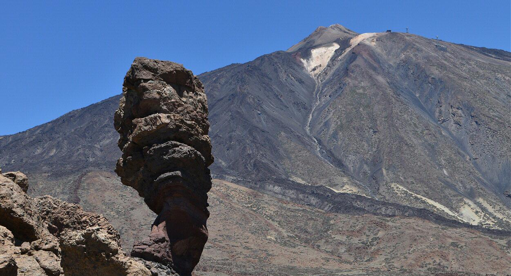
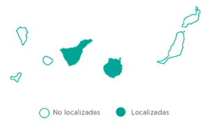
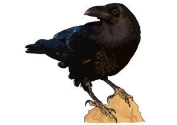
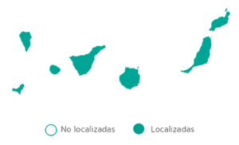

Aves en el parque nacional del Teide
El parque nacional del Teide, por sus contidiones geográficas y climáticas, permite el desarrollo de especies particulares y adaptadas a las duras condiciones ambientales. Para esta lista contamos con dos especies representativas: el Cuervo Canario y el Pinzón Azul.
-
Pinzón Azul (Fringilla teydea)
Es un ave endémica de los pinares canarios de la que podemos distinguir dos subespecies: teydea en Tenerife, donde además constituye el símbolo animal más importante, y polatzeki en Gran Canaria, la primera subespecie en situación vulnerable y la segunda en peligro crítico principalmente por la amenaza de incendios en su hábitat, como el que se produjo en 2007 en Inagua, que arrasó 18 775 ha y dejó al pinzón azul de Gran Canaria al borde de la extinción.

Descripción
De tamaño pequeño, similar al de un gorrión, esta ave es sin embargo una especie robusta. Los machos cuentan con un pico corto de color gris y con respecto al plumaje, aunque hay que diferenciar que el de Tenerife es de un azul más intenso y alas un poco más grandes, el pinzón azul es, como su nombre indica, mayoritariamente azul, la plumas de la barriga son blancas y las de las alas y la cola se mezclan con plumas negras. Además, llaman la atención las franjas blancas en los extremos de las alas en la subespecie grancanaria y azuladas en la tinerfeña. En cambio, las hembras y los machos jóvenes son más parecidas al pinzón vulgar ya que el plumaje es de color pardo-grisáceo. Se trata de una especie gregaria a la que puede verse con otras especies como el mismo pinzón vulgar.
Dieta
La alimentación del pinzón azul es sobretodo granívora, generalmente semillas de pino, que complementa con la ingesta de insectos, fayas y también higos en Gran Canaria. Las crías, por otro lado, se alimentan solo de insectos.
Hábitat
El pinzón azul vive exclusivamente en pinares canarios y en las zonas repobladas de pino de monterrey así como en pinares mixtos. En general habitan a una altitud de 1000 m a 2000 m aunque alguna vez pueden verse en cotas más bajas. Dentro del pinar, elegirán la zona con mayor número de pinos maduros y escobones.
Distribución:
 -
Cuervo canario
Corvux corax es la especie de mayor tamaño de la familia de los córvidos, y en Canarias se encuentra esta subespecie (Corvus corax canariensis). Completamente negro, tanto el plumaje como las patas y el pico, lo encontramos en todas las islas del Archipiélago Canario, aunque el número de ejemplares es cada vez menor.
Descripción
Es un ave robusta, de unos 64 cm de longitud y aproximadamente 120-150 cm de envergadura que pesa alrededor de 1 kg. Es fácilmente reconocible porque tanto las plumas, el pico, las patas como la cola, son de color negro. El plumaje brilla y presenta reflejos metálicos entre verde y violeta azulado. La cola tiene forma de cuña y el pico un poco curvado, largo y fuerte. Las patas también son robustas. En cuanto al canto, el graznido más potente y frecuente es un “craac”, pero puede llegar a emitir una gran cantidad de sonidos diferentes.
Dieta
Es un ave muy hábil, se alimenta prácticamente de cualquier cosa, desde frutos y semillas, sobre todo en las islas con más vegetación y que antiguamente, cuando el número de ejemplares era considerablemente mayor, llegó a ser un problema para los agricultores; hasta de restos de animales muertos que encuentre e, incluso, es capaz de cazar algunos animales pequeños con su fuerte pico (invertebrados y también vertebrados tales como ratones, conejos, lagartos…). Se trata por tanto de una especie omnívora y carroñera.
Hábitat
Como con la dieta, es también muy versátil en cuanto al hábitat, así lo encontramos desde altitudes cercanas al nivel del mar hasta la alta montaña, y, aunque podemos observarle en bosques de pinos y laurisilva, es más habitual que elija zonas rocosas de barrancos, acantilados o montañas donde pueda nidificar.
Distribución:
